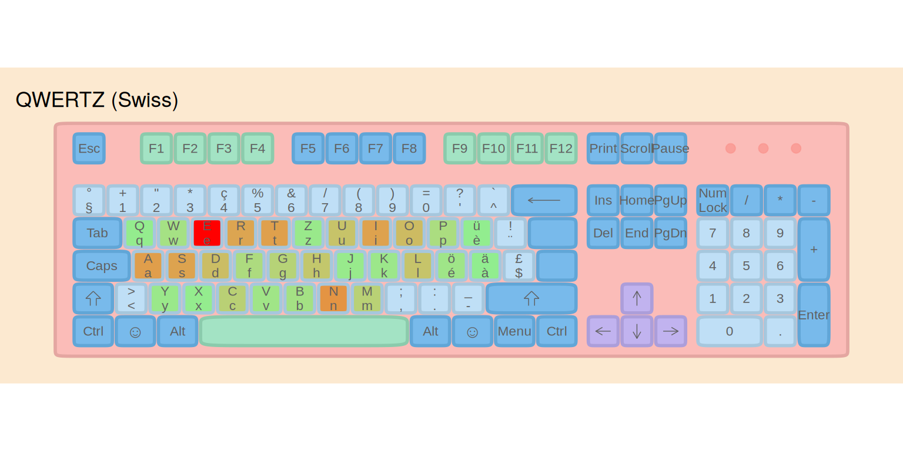
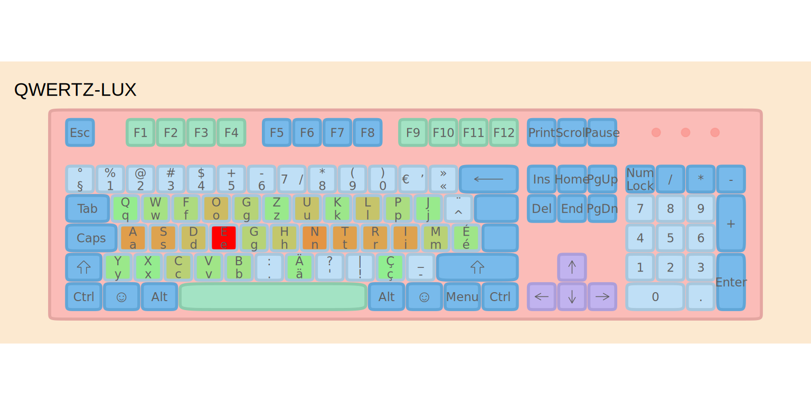
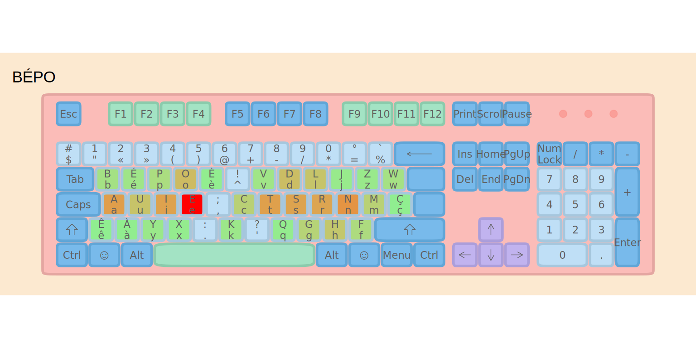

What would a keyboard optimised for Luxembourgish look like? Now with an actual keyboard!
R
keyboard
An optimised layout for a polyglot country
5 years ago I discussed what features a keyboard optimised for Luxembourg should have. I’m talking about Luxembourg the country, and not Luxembourgish the language, because in Luxembourg no one types only Luxembourgish. The most commonly typed language is probably French, and English a close second. German follows in third and then Luxembourgish (some people might argue that, in their own experience, German is more widely typed than French, but I seriously doubt it). Whatever the actual ranking, an optimised keyboard for Luxembourg should be a keyboard in which typing these 4 languages is comfortable. That blog post from 5 years ago dug into that (letter frequency and so on), but until today, I left it on the back burner.
Now, with LLMs it was trivial to continue working on this, implement an effort model, and use an optimisation algorithm to minimise said effort. Today, I can present the layout I’ve obtained:
(there is an error in the layout shown here, there are two “G”s; the one on the right of E should not be there, and instead should be a “,”. This is a bug in the function that creates the heatmap, not in the layout itself.)
⚠️ This is a work in progress! The layout, the name, and even the methodology are all open for discussion. I’m sharing this early because I’d love to hear from the community, especially those who type in multiple languages daily. Your feedback will shape the final version.
Let me also clarify what my goal with this is: do I want to actually suggest a layout that shall be adopted nationally and become a standard? Well, maybe. But I definitely won’t do it alone. So if you’re interested, we could work together and write a layout that could actually be used by different operating systems and pitch it to decision makers.
France Shows the Way
In 2019, France officially adopted two new keyboard standards:
- A revised AZERTY that fixes many issues while maintaining familiarity
- BÉPO — a completely redesigned layout optimised for French
I’ve been using BÉPO for years, and I can honestly say it’s a game-changer. Typing feels more natural, there’s less finger movement, and the learning curve, while steep at first, pays off significantly.
But here’s the thing: BÉPO was designed primarily for French. Luxembourg is unique, because we need something that works for French and German and Luxembourgish and English.
The QWERTZ-LUX Approach
So I started wondering: what would an optimised keyboard layout for Luxembourg look like? You can read about my findings here, but basically, any optimised layout for any of these 4 languages would actually work rather well; this is because 3 out of these 4 languages are Germanic languages, but also, the top 10 most used characters for these 4 languages are essentially the same.
So I had three options:
- Simply propose that we also adopt BÉPO
- Create a fully optimised layout using these 4 languages for setting up the optimisation problem
- Keep QWERTZ as a base for familiarity and only move around a minimal set of characters to improve comfort.
I chose a middle path, inspired by Carpalx’s partial optimization philosophy. Martin Krzywinski demonstrated that you don’t need to remap the entire keyboard to reap most of the rewards. Just 5 strategic key swaps can achieve 70% of the effort reduction of a fully optimised layout, while the learning curve remains manageable.
QWERTZ-LUX (final name pending) follows this principle. It’s essentially a fork of BÉPO’s structure, but with modifications that:
- Keep familiar elements for QWERTZ users (Ctrl+Z, Ctrl+X, Ctrl+C, Ctrl+V shortcuts)
- Optimize the letter arrangement for our multilingual corpus
- Provide direct access to accented characters (é, à, ü, ö, ç, ä) without dead keys
The home row had to change substantially, because QWERTZ’s home row is simply too inefficient. But I tried to minimize disruption elsewhere, following the partial optimization insight that the first few key swaps matter most. Setting up the optimisation problem with these constraints resulted in a keyboard layout that stays familiar, while being much more efficient.
The Corpus: What Does Luxembourg Type?
To evaluate keyboard layouts fairly, we need text that reflects what people actually type in Luxembourg. I created a balanced multilingual corpus with:
- 30% French — Administrative and business language
- 30% English — International communication
- 20% German — Media and education
- 20% Luxembourgish — Daily life and national identity
Again, your mileage may vary. When I first started working in Luxembourg, I only used English and French. Now I also use Luxembourgish more often, and I know people who only write French. Either way, a national keyboard layout should be able to be comfortable for any of these languages.
What actually matters is the top letters across all languages, which are E, N, S, T, R, I, A, the letters you’d want on your home row.
The Effort Model Explained
Before comparing layouts, let’s understand how we measure “typing effort”. I wrote an R package called lbkeyboard that implements a model inspired by Carpalx, the seminal keyboard layout optimization tool created by Martin Krzywinski.
Carpalx vs lbkeyboard
| Aspect | Carpalx | lbkeyboard |
|---|---|---|
| Unit of analysis | Triads (3-key sequences) | Bigrams + individual keys |
| Base effort | Finger travel distance | Position-based (row + column) |
| Penalties | Hand, row, finger costs | Same-finger, same-hand, row-change |
| Stroke path | Complex path penalties | Simplified via bigram weights |
| Layer support | Not built-in | Shift, AltGr, dead key penalties |
Carpalx uses triads and a sophisticated stroke path model. I simplify this to bigrams (2-key sequences) for faster computation while retaining the key ergonomic insights.
Our Model Components
1. Base Effort (Weight: 3.0)
Every key has an inherent effort based on position. Home row keys (where fingers rest) have the lowest effort; reaching up to the top row or down to the bottom row costs more. Finger strength matters too: index fingers are stronger than pinkies.
Example: Typing “e” on QWERTZ (top row, middle finger reach) costs more than typing “j” (home row, index finger)—even though we use “e” 100× more often!
2. Same-Finger Bigram Penalty (Weight: 3.0)
Using the same finger twice in a row is slow and uncomfortable. The model heavily penalizes these sequences.
Example: Typing “de” on QWERTZ uses the same finger (middle finger, D→E). This is penalized. On BÉPO, these letters are on different hands, so no penalty.
3. Same-Hand Penalty (Weight: 0.5)
Consecutive keys on the same hand are slightly harder than alternating hands, because one hand must do all the work.
4. Row Change Penalty (Weight: 0.5)
Jumping between rows (e.g., top→bottom) requires more finger travel than staying on the same row.
5. Layer Penalties
Characters requiring modifier keys (Shift, AltGr, dead keys) incur extra effort: - Shift: +5% effort - AltGr: +20% effort - Dead key (e.g., ˆ + o = ô): +40% effort (two keystrokes!)
Putting It Together
The total effort formula is:
Total = Σ (base × frequency) + Σ (same_finger_penalty) + Σ (same_hand_penalty)
+ Σ (row_change_penalty) + Σ (layer_penalties)Numerical Example: Consider typing “the” (one of the most common English trigrams):
| Layout | Key Positions | Same-Finger? | Row Changes | Effort |
|---|---|---|---|---|
| QWERTZ | T(top), H(home), E(top) | No | 2 | Moderate |
| BÉPO | T(home), H(bottom), E(home) | No | 1 | Low |
BÉPO places two letters on the home row, and two characters are typed using index finger (T and E), so it’s very comfortable to type.
A Concrete Example: The Pangram
Let’s calculate actual effort scores for “the quick brown fox jumps over the lazy dog” (a pangram using every letter of the alphabet):
# Load layouts
data("ch_qwertz")
data("afnor_bepo")
qwertz_lux <- create_qwertz_lux_keyboard()
# Effort weights (same as used throughout)
effort_weights <- list(
base = 3.0,
same_finger = 3.0,
same_hand = 0.5,
row_change = 0.5,
trigram = 0.3
)
pangram <- "the quick brown fox jumps over the lazy dog"
# Calculate effort for each layout
pangram_qwertz <- calculate_layout_effort(ch_qwertz, pangram,
keys_to_evaluate = letters,
effort_weights = effort_weights)
pangram_bepo <- calculate_layout_effort(afnor_bepo, pangram,
keys_to_evaluate = letters,
effort_weights = effort_weights)
pangram_lux <- calculate_layout_effort(qwertz_lux$base, pangram,
keys_to_evaluate = letters,
effort_weights = effort_weights)
data.frame(
Layout = c("QWERTZ", "BÉPO", "QWERTZ-LUX"),
Effort = round(c(pangram_qwertz, pangram_bepo, pangram_lux), 2),
`vs QWERTZ` = paste0(round((1 - c(pangram_qwertz, pangram_bepo, pangram_lux) /
pangram_qwertz) * 100, 1), "%"),
check.names = FALSE
)
#> Layout Effort vs QWERTZ
#> 1 QWERTZ 338.69 0%
#> 2 BÉPO 268.79 20.6%
#> 3 QWERTZ-LUX 303.08 10.5%Even for this short 35-letter sentence, the optimised layouts require measurably less effort.
How Much Better Is It?
Using this effort model (with the weights shown above), here’s how the layouts compare:
| Layout | Effort Score | Hand Balance (L/R %) | Relative (%) | Improvement vs QWERTZ |
|---|---|---|---|---|
| BÉPO | 633624.9 | 43.6/56.4 | 100.0 | 42.1% |
| QWERTZ-LUX | 642547.9 | 52.1/47.9 | 101.4 | 41.3% |
| QWERTZ (Swiss) | 1094468.2 | 59/41 | 172.7 | 0% |
Visualizing the Difference: Heatmaps
Heatmaps show where your fingers spend time. Brighter colors = more keystrokes. Ideally, you want the brightness concentrated on the home row.



Notice how BÉPO and QWERTZ-LUX concentrate activity on the home row, while QWERTZ spreads effort across all rows.
Key Features
| Feature | Benefit |
|---|---|
| Optimized home row | High-frequency letters (E, T, N, R, I, S) within easy reach |
| Direct accents | é, à, ü, ö, ç, ä accessible without dead key combinations |
| ZXCV preserved | Common shortcuts (Ctrl+Z/X/C/V) stay in familiar positions |
| BÉPO-compatible | Same modifier layer philosophy as BÉPO |
What’s Next?
So I’d like to know what others think. Is this something you’d be interested in exploring further? The next step would be to write a layout.ini file for Portable Keyboard Layout for Windows, and write layout files for Linux and macOS, and have real people test it in real-world settings. We could see if it feels comfortable and what else could be optimised.
But is there a chance that such a layout will ever get adopted? After all, there are obstacles:
- People just don’t care and won’t ever switch
- Even if people cared, Luxembourg is too small a market and keyboards will never ship with a Luxembourg-specific layout
In my opinion, rolling out such a keyboard would require a phased and gradual approach:
- Have kids learn to touch type in school on the optimised layout
- Distribute keyboard layout stickers, which are cheap
After some years, the switch would be complete, so I think it’s feasible, but only if there is a community around this layout. Also, who knows, this layout could technically be adopted in Switzerland and other German-speaking nations (maybe as a variant without direct access to French accented letters).
About the Name
The current working name “QWERTZ-LUX” is descriptive but not final. The first letters of the layout are QWFOG, which doesn’t exactly roll off the tongue like “QWERTY” or “BÉPO.” Here are some alternatives I’m considering:
| Name | Meaning |
|---|---|
| QWERTZ-LUX | Current name; descriptive (QWERTZ variant for Luxembourg) |
| LÉTZ | Short for Lëtzebuergesch (Luxembourgish); catchy and culturally meaningful |
| LUXO | Luxembourg Optimized |
| TRIGLOT | Reflects the trilingual focus (French, German, Luxembourgish) |
What do you think? I’m genuinely open to suggestions: a good name helps adoption!
Oh, and happy new year I guess.